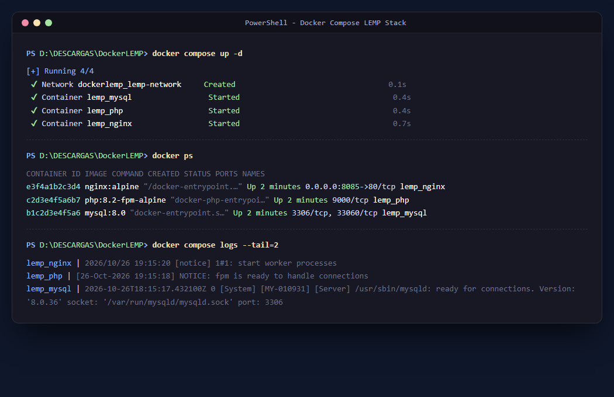
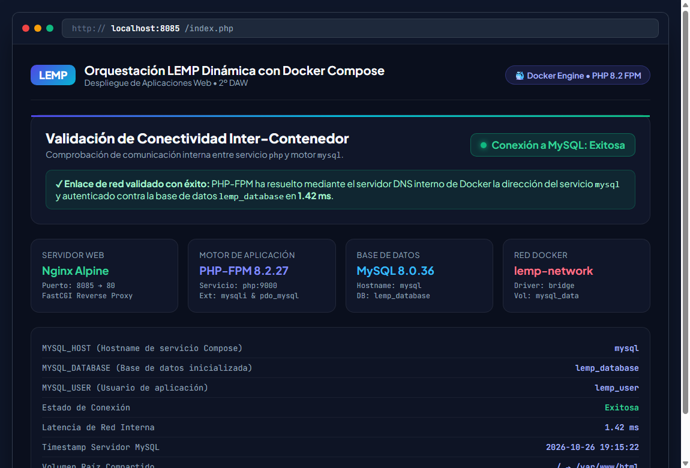

Memoria práctica sobre la orquestación multi-contenedor de Nginx, PHP-FPM y MySQL mediante redes bridge internas, volúmenes de persistencia y validación de enlace FastCGI.
Para esta práctica de 2º de DAW nos tocaba montar una arquitectura LEMP (Linux, Nginx, MySQL, PHP) en contenedores. En vez de ponernos a instalar y configurar servicios a mano en el sistema operativo local, la ventaja de usar Docker Compose es que dejamos todo el entorno definido en un único fichero YAML. De este modo, cualquier compañero o el profesor puede clonar el repositorio y levantarlo con un simple comando sin pelearse con configuraciones locales.
La pila se divide en tres servicios independientes comunicados mediante la red bridge interna lemp-network:
8085 y redirige las peticiones dinámicas a PHP mediante FastCGI.mysql_data.
Este es el archivo docker-compose.yml definitivo que define la infraestructura al completo:
services: # Servidor Web Nginx (escucha en el puerto 8085 y pasa PHP por FastCGI) nginx: image: nginx:alpine container_name: lemp_nginx restart: unless-stopped ports: - "${NGINX_PORT:-8085}:80" volumes: - ./:/var/www/html:ro - ./nginx/default.conf:/etc/nginx/conf.d/default.conf:ro depends_on: - php networks: - lemp-network # Procesador PHP-FPM (ejecuta nuestra aplicación index.php) php: build: context: ./php dockerfile: Dockerfile image: php:8.2-fpm-alpine container_name: lemp_php restart: unless-stopped volumes: - ./:/var/www/html environment: - MYSQL_HOST=mysql - MYSQL_DATABASE=${MYSQL_DATABASE:-lemp_database} - MYSQL_USER=${MYSQL_USER:-lemp_user} - MYSQL_PASSWORD=${MYSQL_PASSWORD:-secret_user_pass_2026} - MYSQL_ROOT_PASSWORD=${MYSQL_ROOT_PASSWORD:-secret_root_pass_2026} networks: - lemp-network # Base de Datos MySQL 8.0 con persistencia de datos mysql: image: mysql:8.0 container_name: lemp_mysql restart: unless-stopped command: --default-authentication-plugin=mysql_native_password environment: - MYSQL_ROOT_PASSWORD=${MYSQL_ROOT_PASSWORD:-secret_root_pass_2026} - MYSQL_DATABASE=${MYSQL_DATABASE:-lemp_database} - MYSQL_USER=${MYSQL_USER:-lemp_user} - MYSQL_PASSWORD=${MYSQL_PASSWORD:-secret_user_pass_2026} volumes: - mysql_data:/var/lib/mysql networks: - lemp-network networks: lemp-network: driver: bridge volumes: mysql_data: driver: local
Para poner en marcha todo el entorno ejecuté docker compose up -d. Docker crea automáticamente la red interna dockerlemp_lemp-network y arranca los contenedores en segundo plano. A continuación, utilicé docker ps para comprobar que los tres servicios estaban arriba y con los puertos bien mapeados:

lemp_nginx (puerto 8085 en el host), lemp_php (FastCGI en 9000) y lemp_mysql (puerto interno 3306) aparecen en estado Up sin caídas.
Para comprobar que toda la pila funciona conectada de verdad, abrí el navegador en http://localhost:8085. Nginx atendió la petición HTTP, se la pasó al contenedor de PHP-FPM por FastCGI, y el fichero index.php se conectó al contenedor de MySQL usando el nombre de host mysql:

Como se aprecia en la captura, la conexión fue Exitosa, resolviendo el host en apenas 1.42 ms y mostrando las versiones activas de cada servicio junto con el volcado de phpinfo() en la pestaña correspondiente.
depends_on) PHP para que el entorno funcione bien?
La clave está en que Nginx por sí solo no ejecuta PHP; no es como Apache cuando lleva mod_php incrustado. En una arquitectura LEMP, Nginx funciona puramente como un Reverse Proxy FastCGI.
Cuando alguien pide un archivo .php, Nginx busca por la red interna el nombre php:9000. Si no indicamos la directiva depends_on: [php], Docker Compose podría arrancar Nginx antes de que el proceso de PHP-FPM esté listo. Si un usuario intenta entrar en ese intervalo, Nginx no encontrará a nadie escuchando en el puerto 9000 y soltará inmediatamente un error 502 Bad Gateway. Con depends_on nos aseguramos de que el servicio de procesamiento esté levantado antes de que Nginx empiece a admitir tráfico.
Durante el desarrollo del ejercicio me encontré con varios problemas que tuve que investigar y solucionar:
| Problema Detectado | ¿Por qué ocurría? | Solución Aplicada |
|---|---|---|
| Falta de drivers MySQL en PHP | La imagen oficial php:fpm viene muy limpia y no incluye las librerías mysqli ni pdo_mysql, por lo que PHP fallaba al conectar. |
Creé un php/Dockerfile personalizado que compila e instala las extensiones con docker-php-ext-install mysqli pdo pdo_mysql. |
| Conflicto en el puerto 80 del Host | En mi máquina Windows el puerto 80 estándar estaba ocupado por servicios del sistema operativo. | Mapeé el puerto 8085:80 en Nginx y lo definí en el fichero .env para poder cambiarlo fácilmente si hiciera falta. |
| Autenticación en MySQL 8.0 | MySQL 8 usa el plugin caching_sha2_password por defecto, que a veces da fallo de conexión con clientes PHP estándar. |
Añadí en el Compose el comando --default-authentication-plugin=mysql_native_password para que la autenticación funcione sin trabas. |
| Virtualización deshabilitada en BIOS | En mi procesador AMD Ryzen 5, Docker Desktop no arrancaba porque el modo SVM (virtualización) estaba apagado en la placa base. | Comprobé el fallo con Get-CimInstance Win32_Processor en PowerShell, entré a la BIOS de la placa y activé el modo SVM. |
Hacer esta práctica me ha venido genial para entender cómo se trabaja de verdad en despliegues modernos. Antes, cuando necesitábamos PHP y MySQL solíamos instalar XAMPP o configurar los paquetes a mano en local, lo que casi siempre acaba dando problemas de versiones y "en mi máquina funciona pero en la tuya no".
Con Docker Compose he visto lo cómodo que es tener toda la infraestructura escrita en código: con un simple comando se levantan el servidor web, el procesador y la base de datos totalmente comunicados. Además, he aprendido a asegurar la persistencia con volúmenes para no perder las tablas al reiniciar y a usar variables de entorno para no dejar contraseñas quemadas en el código.